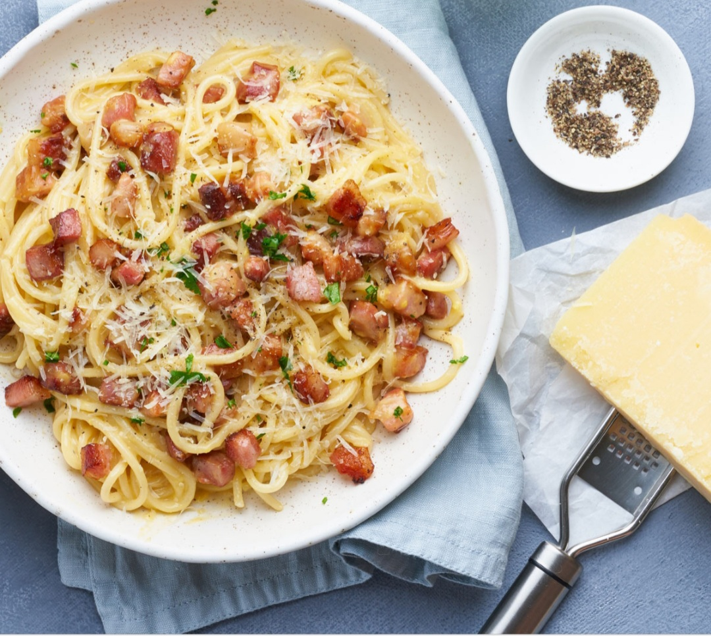
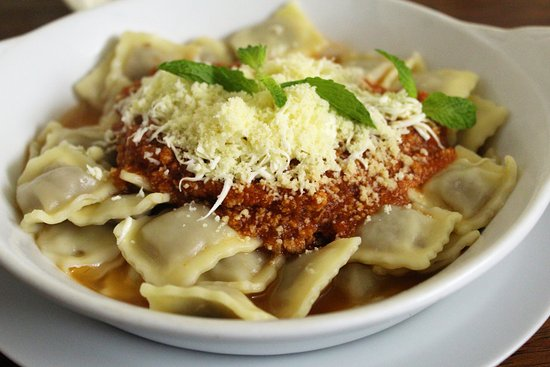

Sorrentinos de jamon,ricota y muzzarella con salsa bechamel

Tallarines al huevo a la carbonara.

Ravioles de ricota y muzzarella con salsa bologñesa.
Sorrentinos ciboulette con salsa bechamel
Ingredientes
1 caja de sorrentinos ciboulette
500 ml de leche entera
50 gr de manteca
2 cucharadas de harina
Nuez moscada cantidad necesaria
Sal cantidad necesaria
Elaboración paso a paso
Cocinar los sorrentinos en una caserola con agua hirviendo y sal
En una caserola agregar la manteca y la harina
Cocinamos durante 1 minuto sin dejar que tome color
Agregar la leche entera tibia y revolver bien para evitar la formación de grumos
Sazonar a gusto
Tallarines ciboulette a la carbonara
Ingredientes
500gr de tallarines
100 g de queso pecorino romano (o sustituir por queso gouda curado)
sal
pimienta negra
Elaboración paso a paso
Rallar el queso en un bol grande de vidrio o recipiente de aluminio.
Moler la pimienta negra sobre el queso y mezclar bien.
Cocer los tallarines al dente.
No escurrir los tallarines con un colador . Tomar directamente de la olla con un tenedor grande o utensilio similar, de manera que no queden demasiado secos, y ponerlos dentro el bol con el queso y la pimienta.
Incorporar también al cuenco un cucharón de agua de cocción de los tallarines
Mezclar bien y rápidamente, de modo que no se hagan grumos y los spaghetti queden bien cubiertos con la crema que habrán formado el queso, la pimienta y el pecorino.
Servir bien calientes.
Ravioles ciboulette con salsa bologñesa
Ingredientes
1 caja de ravioles de ricota y queso ciboulette
300gr de carne molida
1 botella de pure de tomate
Ajo cantidad necesaria
1 pimiento rojo
200gr de cebolla
Sal cantidad necesaria
Pimienta negra
50cc de vino tinto
Elaboración paso a paso
Poner a calentar abundante cantidad de agua
picar la cebolla, el pimiento, el ajo
En una cacerola agregar aceite y la cebolla picada
Dejamos cocinar por unos minutos y agregamos el pimiento y el ajo
Agregamos la carne molida
Cocinar bien la carne y sazonar a gusto
Luego agregar el pure de tomate y condimentar
Agregar el vino tinto
Dejar cocinar a fuego minimo tapado e ir revolviendo cada tanto durante 30 minutos